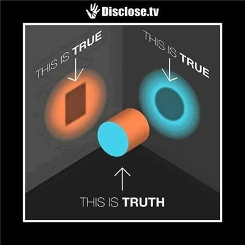

Признак первосортных мозгов — это умение держать в голове две взаимоисключающие мысли одновременно, не теряя при этом способности мыслить.
– Фрэнсис Скотт Фицджеральд
Чем глубже в структуру реальности копаешь, тем больше удивляешься, как плохо наш здравый смысл приспособлен для ее восприятия. Взять хотя бы дуализмы. Волна или частица, капитализм или социализм, утилитаризм или эгалитаризм, нисходящие или восходящие алгоритмы, врожденные или приобретенные признаки, природа или цивилизация, он или она, инь или ян, и т.д. Я буду использовать как основной пример волны-частицы, потому что их мы, как ни странно, понимаем лучше всего.
Дело было в 17 веке. Физики пытались понять, что представляет собой свет. Были выдвинуты две параллельные гипотезы: «свет – это волны» и «свет – это частицы». Поначалу обеим сторонам спора казалось, что опровергнуть противоположную гипотезу – дело техники. Этим они и занимались почти триста лет, пока, наконец, не утвердилась идея дуализма, согласно которой свет – это одновременно и волна, и частица. Да и не только свет, а вообще все. Но это тонкости. Важно то, что тривиальный на первый взгляд вопрос просто не имел ответа в той плоскости, в которой его искали. Физики смогли не только смириться с этим, но и влюбиться в новую теорию – потому что ими руководит в первую очередь не привязанность к теориям, а желание как можно лучше понимать мир. Увы, те же самые люди могут рассуждать совсем иначе, скажем, в экономике.
Это, естественно, не означает, что в любом споре обе стороны равноправны: ведь можно придумать бесконечное количество однозначно ошибочных идей.
Да, в каком-то смысле понятие дуализма – это костыль. Мы просто не знаем, как выглядит более общая структура, которая в разных проекциях проявляет себя противоположным образом: подобно тому, как цилиндр может отбрасывать тень в форме круга, а может – в форме прямоугольника, в зависимости от того, какой стороной он повернут к источнику света. Проблема в том, что мы можем вообще никогда не увидеть «цилиндр», а строить жизнеспособные теории света, экономики, экологии, психологии (и что там еще было в первом абзаце) надо прямо сейчас.
